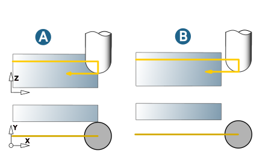

Macros
Approach and retract macros are used to define the tool approach at the start point and the tool retraction from the end point of the machining. This behavior can either be defined manually or calculated automatically.
Automatic
Smooth: The approach or retract movement is performed smoothly in a circular motion.
Length: Defines the length of the approach or retract movement.
Side clearance/Axial clearance: Clearance in the axial or X/Y direction that can be travelled without a collision.
Max. axial lift: Maximum lifting movement in the axial direction.
Feedrate macros: Various feedrate values for approach and retract macros. Default = Feedrate XY.
Manual
The tool is approached or retracted either in a Perpendicular, Circular or Tangential manner.
The retraction can also be performed as a Ramp. These additional movements are only ever performed if they do not result in a collision with neighboring surfaces.
The approach or retract movement is performed smoothly in a circular motion.
Approach macro / Retract macro
The approach or retract movement is performed smoothly in a circular motion.
Length: Length of the approach/retract movement.
Side clearance/Axial clearance: Clearance in the axial or X/Y direction that can be travelled without a collision.
Max. axial lift: Maximum length of the lifting movement in the axial direction.
The following tool movements are available as approach and retract behavior for the Manual macro mode: Perpendicular, Circular, Tangential, Ramp (only as an approach macro). These additional tool movements are only ever carried out if they do not result in a collision.
Feedrate macros
Feedrate for approach and retract macros. If no feedrate is defined here, the macros are run with the Feedrate XY that is defined on the Tool dialog page.
Return macro
If Return macro is enabled, horizontal stepover is executed between the milling paths via the clearance plane or clearance distance. The activated approach or retract macro is executed for each retract or infeed movement.
Off (A), Full (B): Available for the 5X Shape Offset Finishing cycle in Automatic macro mode.
|  |
Macro simultaneous: Available for the cycles 5X Z Level Finishing, 5X Swarf Cutting 1 Curve and 5X Shape Offset Finishing. The transition to the macro movement takes place without abruptly changing direction and without slowing down the machining speed. Visible machining marks are avoided.
(1) Not activated, (2) Activated.